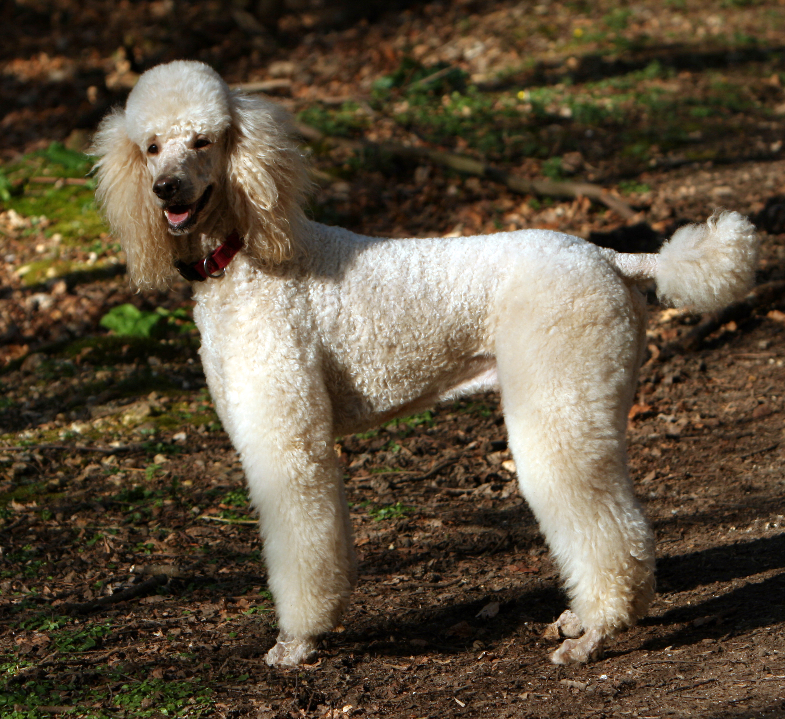
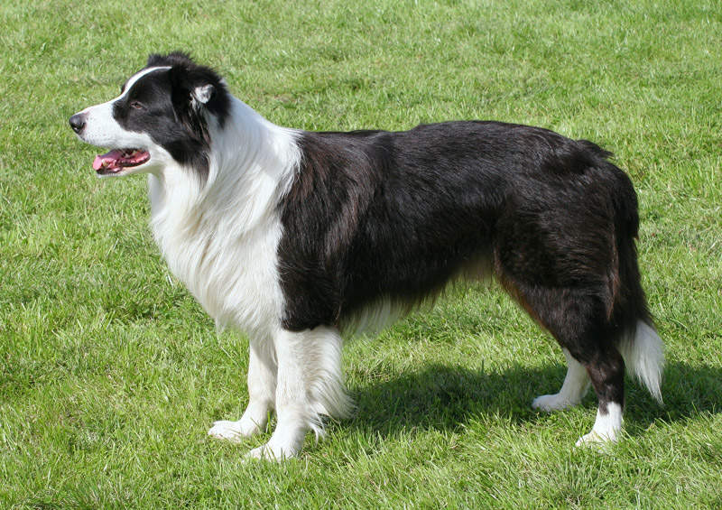
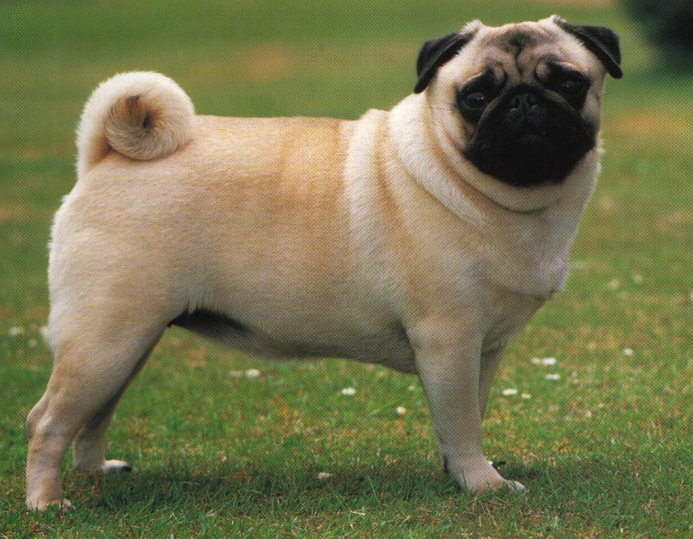

Šunų paroda
Pudelis

Galva didinga, tiesių linijų, proporcinga kūnui. Nosies galiukas ryškus. Elegantiškas snukis, jo ilgis truputį didesnis už kaukolės ilgį, neužaštrintas, tvirtas, gerai užpildytas. Lūpos standžios, vidutinio storumo. Neišsiskiria žandenos. Perėjimas nuo kaktos iki snukiosilpnaiišreikštas. Kaukolė ovalios, pailgintos formos.
Akys labai ryškios, įkypos. Dantys tvirti, sankanda žirkliška. Ausys siekia nosies galiuką, prigludusios prie skruostų, plokščios, sunkios, apaugusios tankiomis, ilgomis garbanomis.Kaklas tvirtas, vidutinio ilgio. Mentės pasvirusios, raumeningos. Priekinės kojos tiesios, raumeningos.
Kūnas proporcingas. Kūno ilgis truputį viršija keteros ilgį. Nugara tiesi, trumpa, juosmuo tvirtas, raumeningas. Krūtinė gerai išsivysčiusi, pakankamai gili, šonkauliai išgaubti, platūs nugaroje. Pilvas įtrauktas. Kryžius apvalokas, bet ne nukirstas, uodega išaugusi aukštai, nukirpta, bet leistina ir visoilgio.Klubai tvirti, raumeningi.Letenėlės mažos, kietos. Pirštai tvirtai suglausti (išplėsti – trūkumas). Kailis labai tankus, putlus, vidutinės faktūros. Kerpamas pagal standarto šukuoseną.Oda neraukšlėta, su pigmentu. Juodi, rudi, pilki ir abrikosiniai turi pigmentą, atitinkantį kailiospalvą.Baltųpudelių pigmentacija pilka.
Skaitykite daugiau...
Vokiečių aviganis

Vokiečių aviganis yra vidutinio dydžio šuo, šiek tiek prailgintas, tvirtas, puikiai išvystytais raumenimis, pilvas šiek tiek įtrauktas.
Pagrindinės proporcijos. Patinų aukštis ties ketera 60-65 cm, svoris 30-40 kg. Patelių aukštis ties ketera 55-60 cm, svoris 22-32 kg. 10-17 proc. kūnas yra ilgesnis nei aukštis ties ketera. Gyvena 8 - 13 metų. Gali išgyventi net 20 metų.
Darbinės linijos Vokiečių aviganis
Vokiečių aviganiai – išlaikantys pusiausvyrą ir pasitikintis savimi šunys, nuoširdūs ir geraširdžiai (išskyrus situacijas, kada šuo yra įsiaudrinęs, susijaudinęs), atidūs ir klusnūs. Jie drąsūs, tvirto charakterio ir iš prigimties apdovanoti koviniu instinktu. Šios visos savybės lemia, kad vokiečių aviganis gali būti kompanionu, sarginiu, apsauginiu, tarnybiniu ar ganymo šunimi.
Pleišto formos, proporcinga (jos ilgis sudaro apie 40 proc. aukščio ties ketera), ne per sunki ir ne per ilga, ties ausimis saikingai plati. Žiūrint iš priekio ir iš šono kakta šiek tiek iškili, be ar su silpnai matomu įlinkimu viduryje. Galvos kaukolinės dalies ir snukio ilgių santykis yra 1:1. Žiūrint iš viršaus kaukolė nuo ausų srities iki nosies galo proporcingai siaurėja. Perėjimas nuo kaktos link pleišto formos snukio yra silpnai išreikštas. Viršutinis ir apatinis žandikauliai labai stiprūs, gerai išsivystę. Nosies nugarėlė tiesi, lūpos sausos, gerai prigludusios, tamsios spalvos. Nepageidaujamos snukio formos: kumpa, lenkta, išgaubta.
Skaitykite daugiau...
Čihuahua

Čihuahua turi dideles, stačias ausis. Aukštis ties ketera yra 15–25 cm, dydžiui griežtų standartų nėra. Trumpaplaukiai šuniukai yra mažesni. Svoris – nuo 500 g iki 3 kg, pageidaujama 1 kg 800 g. Trūkumai – nežymus galvos gumbas, nežymus pakaktys, kreivos sulinkusios kojos, nulėpusios ausys, garbanoti ar per ilgi plaukai, neplaukuota uodega, ilgas smailus snukis. Pagal išvaizdą čihuahua dažnai maišomi su toiterjerais, mat pastarųjų gerokai didesnė populiacija Lietuvoje.
Skaitykite daugiau...
Borderkolis

Borderkolis (angl. Border Collie) – avių ganymui skirta darbinių šunų veislė, kilusi iš Didžiosios Britanijos Priklauso 1 FCI grupei. Veislė taip pavadinta pagal tikėtiną kilmės vietą – Anglijos ir Škotijos pasienį (angl. border). Žodis collie šunims įvardyti anglų kalboje imtas vartoti nuo XIX a. pab. Daugelio geriausiais laikomų borderkolių kilmė atsekama iki šuns, vardu Old Hemp. Pavadinimą Border Collie 1915 m. Jungtinėje Karalystėje pirmąkart pavartojo James Reid, International Sheep Dog Society (ISDS) sekretorius, taip atskirdamas ISDS registruotus šunis nuo Kennek club kolių.
Skaitykite daugiau...
Mopsas

Kvadratiško kūno, raumeningas. Galva didelė, masyvi, apvali. Snukis trumpas, bukas, kvadratiškas, ne riestas. Ant galvos ir snukio – didelės, gilios raukšlės („diadema"). Akys tamsios, didelės, kiek išsprogusios, blizgančios. Žvilgsnis švelnus, klausiantis, susijaudinusio šuns – trykšta energija. Ausys mažos, plonos, aksominio švelnumo. Ausų galai nukabę į priekį, dengia angas. Kaklas trumpas, storas, raukšlėtas.
Liemuo trumpas, kresnas, krūtinė plati, ryškūs šonkauliai. Viršaus linija tiesi.
Mopsas
Skaitykite daugiau...
Shiba Inu

„Shiba“ rėmas yra kompaktiškas su gerai išvystytais raumenimis.
Shiba Inu yra padengtas dviguba danga, išorinis sluoksnis yra standus ir tiesus, o apatinis sluoksnis yra minkštas ir storas. Kailis yra trumpas ir lygus ant lapės veido, ausų ir kojų. Apsauginiai plaukai atsistoja nuo kūno ir yra maždaug 4–5 cm (1+1⁄2–2 colio) ilgio ties ketera. Apsauginių plaukelių paskirtis – apsaugoti apatinę odą ir atbaidyti lietų ar sniegą. Uodegos plaukai yra šiek tiek ilgesni ir atviri šepečiu. Jų uodegos yra išskirtinė savybė, dėl kurios jie išsiskiria iš kitų šunų veislių. Jų uodegos padeda apsaugoti juos nuo atšiaurių žiemos orų. Kai jie miega, Shiba Inus susiriečia ir naudoja uodegą, kad apsaugotų veidą ir nosį, kad apsaugotų jų jautrias vietas nuo šalčio.[Reikia citata] Japonijos veislyno klubas ir Japonijos veislynų klubas laiko kreminę spalvą „didžiuliu trūkumu“. Amerikos veislyno klubas. Jis niekada neturėtų būti tyčia veisiamas parodos šunyje, nes nėra matomi privalomi ženklai, žinomi kaip "urajiro" (裏白); „Urajiro“ pažodžiui reiškia „balta apatinė dalis“. Ir atvirkščiai, baltas (grietinėlės) kailis yra visiškai priimtinas pagal Britų veislyno klubo veislės standartą.
Skaitykite daugiau...
Grįžti į pradžia